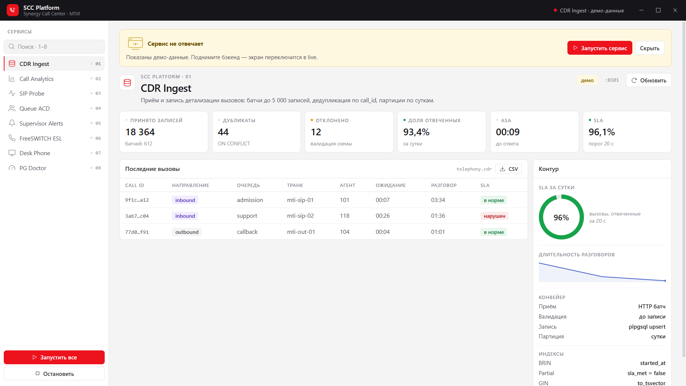
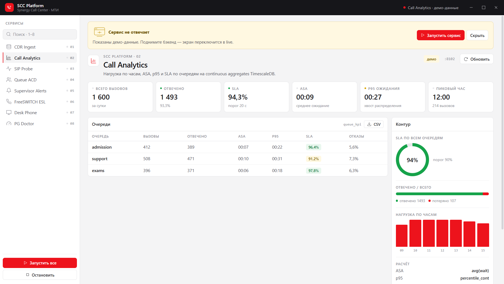
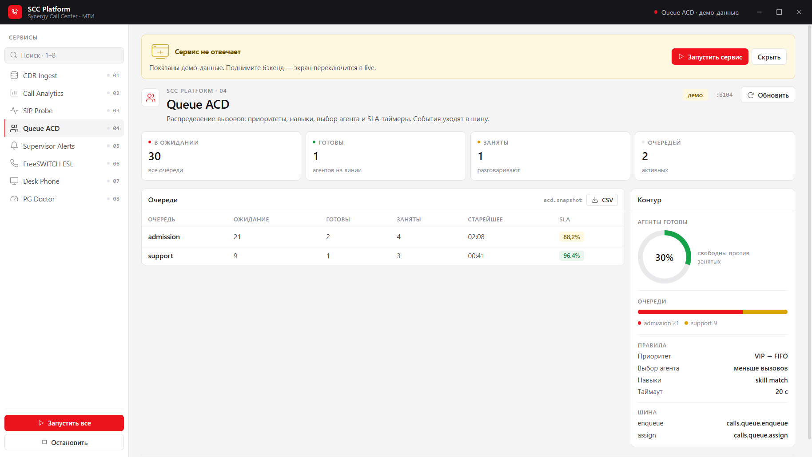
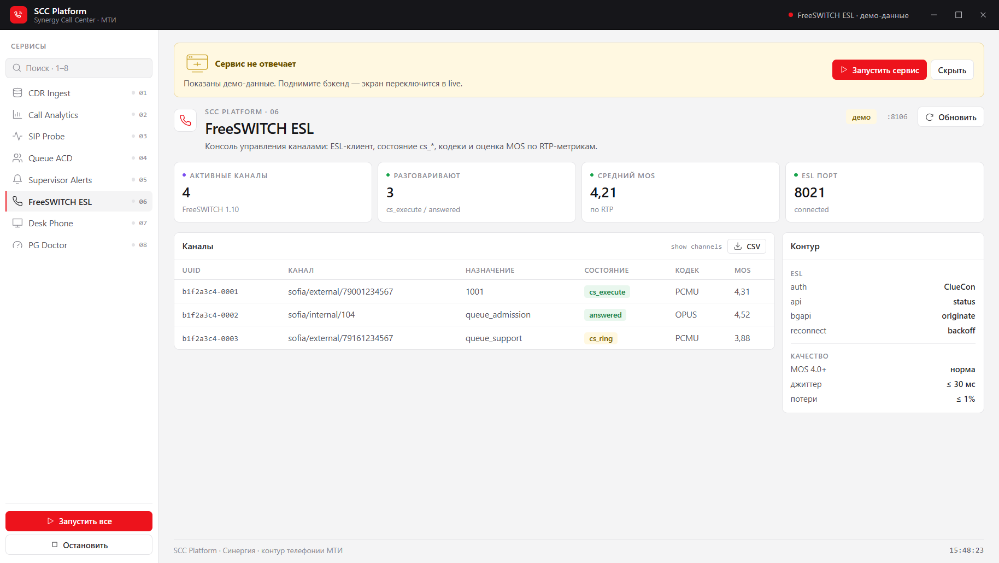

desktop
пет-проект
2026
SCC Platform
Оконное приложение на Electron поверх восьми Go-сервисов телефонии.
8сервисов на Go
100%std lib, без внешних зависимостей
232проверки стиля в линтере
2режима: live API и демо-данные
Go 1.27
PostgreSQL / TimescaleDB
SIP · WebRTC · RTP
FreeSWITCH ESL
NATS
Next.js 16
Electron
Playwright
- Собственный SIP-клиент и ESL-протокол без сторонних библиотек
- Партиционирование CDR, partial / expression / GIN индексы, разбор дедлоков
- Пульт: поиск, горячие клавиши, сортировка таблиц, копирование, экспорт CSV
- Скриншоты снимаются Playwright'ом из живого окна